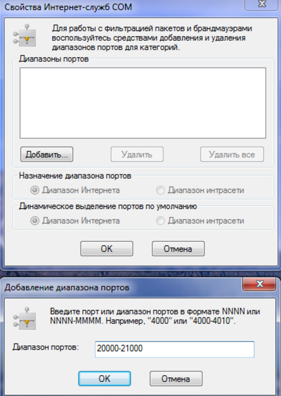

Взаимодействие между базами 1С через COM
Рассмотрено много особенностей взаимодействия между базами 1С по COM технологии
Взаимодействие между базами 1С через COM
В этой статье я расскажу о многих особенностях взаимодействия между базами 1С по COM технологии, накопленных за годы развития и использования интеграционного коммерческого продукта 2iS:Интеграция нашей компании 2iS.
Термины
ОС – операционная система
COM-клиент – процесс(поток) ОС, запросивший создание COM-объекта
COM-сервер – COM-объект, созданный по запросу клиента
Издание платформы – подстрока до 2-й точки версии платформы (например 8.2, 8.3)
Com-соединитель – COM-объект V8X.ComСonnector для создания внешних соединений с базами 1С
Automation-сервер – он же OLE-сервер, COM-объект V8X.Application для создания приложений 1С
Сборка платформы – полная строка версии платформы (например 8.2.19.130, 8.2.16.352)
Виды COM классов
Для каждого издания платформы в системном реестре регистрируются собственные классы для взаимодействия с базами. Символ “X” обозначает место подстановки номера издания платформы (например 0,1,2,3,4).
Привязка COM классов к dll-файлам
Привязка имени COM класса к конкретному dll-файлу осуществляется через ветку HKEY_CLASSES_ROOT системного реестра, которая собирается следующим образом:
Поэтому регистрация класса от имени пользователя имеет приоритет на общей регистрацией.
Для 32-b и 64-b режимов исполнения кода в реестре хранятся отдельные ветки и соответственно отдельные привязки. Поэтому управление COM-классами для них осуществляется независимо. В частности это касается класса V8X.ComConnector (на 64-b операционной системе)
Подключение внешнего соединения
Рассмотрим алгоритм подключения внешнего соединения в деталях
На графике видно, что длительность создания этого COM-объекта прямо пропорциональна задержке канала и коэффициент пропорциональности составляет примерно 24. Можно предположить, что при создании этого COM-объекта происходит 24 вызова через канал.
2. Выполнение метода Connect (создание внешнего соединения)
Подключение Automation-сервера (OLE)
Затраты на COM-вызовы
Каждый раз, когда мы обращаемся во встроенном языке к свойству или методу COM-объекта (выполняем COM-вызов), происходит ряд дополнительных действий по сравнению с обращением к родному объекту встроенного языка. Если COM-сервер находится в другом локальном процессе, то при этом еще сначала выполняется перенос всех параметров из COM-клиента в COM-сервер и в конце выполняется обратный перенос параметров в COM-клиент. Для такого переноса информация естественно должна быть сериализована на стороне отправителя и затем десериализована на стороне получателя, что в совокупности с некоторыми другими действиями получило название маршалинга и демаршалинга. В нелокальном режиме (DCOM) такой перенос будет еще тратить время на сетевые коммуникации и при первом обращении к новому COM-объекту на передачу его «скелета», и поэтому задержка канала будет играть решающую роль (Подробнее о COM вызовах, DCOM в википедии, Технический обзор DCOM,)
Соотношение затрат на вызов по типам расположения COM-сервера
Минимизация количества COM-вызовов
Обратная связь
При использовании принципа «минимум COM-вызовов» значительную часть времени код будет выполняться в чужом контексте, что серьезно усиливает некоторые неудобства COM-вызовов:
Для борьбы с этими неудобствами можно организовать обратную связь от COM-сервера к COM-клиенту, передав COM-Серверу ссылку на общий модуль COM-клиента и периодически вызывая через нее COM-клиент. Нужно отметить, что есть ошибки платформы (https://partners.v8.1c.ru/forum/t/1382465/m/1382465 ), проявляющиеся при создании ссылок на один общий модуль более чем в одном COM-севере сеанса. Поэтому пока лучше очищать ссылки на общий модуль во всех удерживаемых COM-серверах перед помещением в новый. В обратных вызовах можно передавать:
накопленные сообщения пользователю (получать функцией ПолучитьСообщенияПользователю(Истина))
Схема принципа “минимум COM-вызовов”
Такая схема дружественна к большим задержкам каналов связи. Поэтому она во многом похожа на вызов веб-сервиса. А следовательно используя ее для COM взаимодействия, вы значительно снижаете затраты на возможные переходы между COM и веб-сервисом в обоих направлениях.
Отладка
При использовании принципа «минимум COM-вызовов» облегчить отладку выполнения кода на COM-сервере можно, сделав опциональное модальное окно подключения к базе в COM-клиенте. В этом окне должны быть возможности задания одноразовых параметров подключения, выполнения вспомогательных функций и просмотра информации о подключенном сеансе. Ниже в качестве примера показано такое окно из нашего продукта
Чтобы включить возможность отладки внешних соединений, в подкаталоге conf нужно создать файл comcntrcfg.xml с соответствующим содержимым. В окне подключения можно сделать кнопку/флажок для программного создания такого файла. Однако много версий платформы содержат ошибку, из-за которой предметы отладки внешних соединений не видны в отладчике даже с этим корректно настроенным файлом. На платформе 8.3 эти проблемы вроде бы решены.
Пример файла comcntrcfg.xml:
<config xmlns="http://v8.1c.ru/v8/comcntrcfg">
<debugconfig debug="true" debuggerURL="tcp://localhost:1560"/>
</config>
Также нельзя забывать о необходимости запускать конфигуратор для отладки с той же (до регистра букв) строкой соединения, что и предмет отладки. Поэтому в этом диалоге нужно сделать кнопку для запуска конфигуратора COM-сервера с правильной строкой соединения.
В какой-то мере обойти проблему невидимости предмета отладки внешнего соединения и ряд других неудобств можно путем однократного выполнения кода на толстом клиенте с заменой режима «Внешнее соединение» на «Automation-сервер» (приложение), т.е. используя COM класс V8X.Application и включенную видимость. Поэтому в окне подключения нужны параметры для выбора режима подключения.
После создания подключения на стороне COM-клиента обычно требуется подключение отладчика базы COM-сервера и установка там точки останова в нужном месте. Поэтому в окне подключения нужно расположить кнопку подключения отладчика/конфигуратора COM-сервера. Если COM-сервер запущен в режиме видимого приложения, то для подключения отладчика можно воспользоваться асинхронным вызовом исключения в нем. Из диалога с ошибкой в приложении COM-сервера через кнопку «Конфигуратор» можно будет открыть конфигуратор и в большинстве случаев сразу подключить отладчик. Если подключение отладчика таким способом недоступно, то оператору поможет отображение информации о сеансе (его номера) в базе COM-сервера. Также нужна кнопка открытия в открытом отладчике файла внешней обработки, которая будет выполняться в нем.
Управление COM+ приложениями 1С
Осуществляется через оснастку dcomcnfg.exe. Для регистрации 1С в качестве COM+ приложения необходимо открыть оснастку "dcomcnfg". В ней в ветке "Службы компонентов"-"Компьютеры"-"Мой компьютер"-"Приложения COM+"(COM+ Applications) необходимо добавить новое приложение (application). При добавлении можно указать любое имя. Далее необходимо указать пользователя, от имени которого будет работать COM+ приложение, на закладке Идентификация (Identity). Также нужно задать доступ к приложению для нужных пользователей путем добавления, если отсутствует, роли с любым именем в ветке Роли (Roles), и добавления в ее ветку Пользователи (Users) пользователя "Прошедшие проверку" (Authenticated Users). После добавления приложения необходимо создать новую компоненту. Для этого в ветке "Компоненты" созданного приложения необходимо выбрать пункт меню "Создать"-"Компонент". При создании выбрать импорт уже зарегистрированных компонентов и найдите в списке (желательно 64-битную) компоненту 1С (V8x.COMConnector.1). Подробнее о настройке COM+ приложений читайте Интерфейс пользователя: службы компонентов
![]()
Далее можно изменить тип активации (внутрипроцессный/внепроцессный) на закладке Активация/Activation.
В нашем продукте имеется инструмент «Управление COM классами 1С» для просмотра/регистрации/изменения всех COM классов и COM+ приложений 1С на указанном компьютере:
Настройка DCOM-сервера
Для Windows 2008 Server нужно добавить роль «Сервер приложений» (Application server). Для этого необходимо открыть панель управления компьютером, щелкнуть правой кнопкой мыши в ветки "Роли" и выбрать пункт меню "Добавить роль".

Появится око в котором необходимо выбрать роль "Сервер приложений"/"Application server". На этапе выбора ролей сервера приложений необходимо указать пункт "Сетевой доступ к COM+"/"COM+ network access". Если это не сделать, то при попытке создания COM-объекта вы будете получать ошибку "Ошибка при вызове конструктора (COMОбъект): The component or application containing the component has been disabled".
DCOM процессам для связи между собой динамически выдаются порты из диапазона (по умолчанию) от 1024 до 65535. Поэтому в сетевых экранах обоих компьютеров (com-клиента и com-сервера) должны быть открыты порты RPC (135, 139, 445, 593) и диапазон 1024-65535 (TCP/UDP).
Можно ограничить этот диапазон портов. Для этого открываем Администрирование – Службы компонентов (или в командной строке набираем dcomcnfg.exe). В открывшейся программе находим ветку «Мой компьютер» и открываем её свойства (см. скриншот).
В свойствах открываем вкладку «Набор протоколов», там, в свою очередь, открываем свойства «TCP/IP с ориентацией на подключения»
В свойствах TCP/IP по умолчанию – пустой список. В него можно добавить конкретный диапазон портов, которые будут использоваться DCOM. Какие именно порты выбрать – решать вам. Главное, чтобы не было других стандартных служб, уже занявших выбранные порты. Мне встречались рекомендации открывать не менее 1000 портов, так как очень многие системные программы используют DCOM. Так на скриншоте ниже я указываю, что DCOM должен работать по диапазону портов 20000-21000.

После этого нужно перезагрузить компьютер (перезапустить отдельно DCOM нельзя, слишком много на него завязано), и DCOM станет работать только по указанным портам.
Проблемы
COM+ пулинг. v82Server.dll - Технология Microsoft COM+ для доступа к 1C82
Com-технология VS веб-сервисы в локальной сети
Недостатки
Преимущества
Захват клиентских лицензий
В большинстве случаев всем клиентским приложениям, частным случаем которого являются Automation-сервер и внешнее соединение, в одном сеансе ОС требуется всего лишь одна на всех лицензия. Однако если клиентскому приложению не удалось получить аппаратную лицензию (от локального HASP или сетевого HASP) и программную лицензию (платформы или базовой конфигурации), то предпринимается попытка получить отдельную лицензию с сервера 1С:Предприятия. Сервер 1С:Предприятия может выдать лицензию только, если в свойствах базы разрешена выдача лицензий сервером 1С:Предприятия. В таком случае каждое клиентское приложение и внешнее соединение может захватывать свою собственную лицензию.
Заключение
Если вы хотите подробнее узнать об описанных особенностях, приобретайте продукт 2iS:Администратор. Несмотря на наличие в конфигурации защищенного модуля, 99% программного кода конфигурации открыто, то есть Вы можете изучить реализацию описанных приемов.